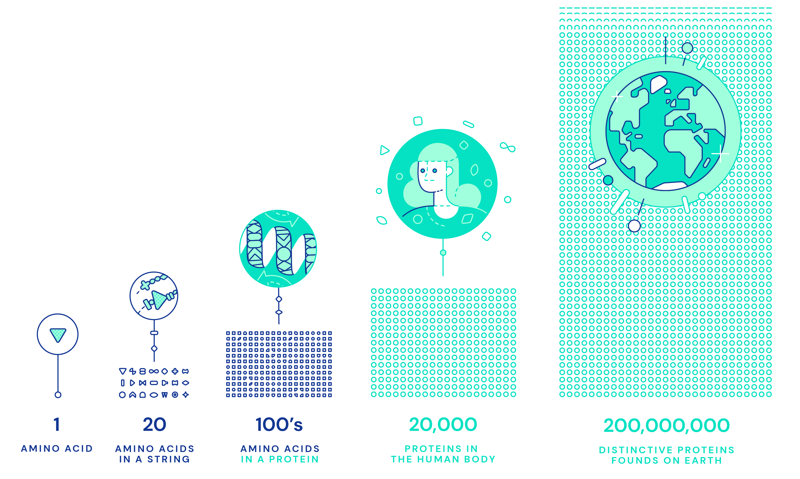

Understanding Protein Folding
Proteins are complex molecules that are essential to life. Each has its own unique 3D shape that determines how it works and what it does.
Building blocks of life
Inside every cell in your body, billions of tiny molecular machines are hard at work. They’re what allow your eyes to detect light, your neurons to fire, and the ‘instructions’ in your DNA to be read, which make you the unique person you are.
These exquisite, intricate machines are proteins. They underpin not just the biological processes in your body but every biological process in every living thing. They’re the building blocks of life.
Currently, there are over 200 million known proteins, with many more found every year. Each one has a unique 3D shape that determines how it works and what it does.
But figuring out the exact structure of a protein remains an expensive and often time-consuming process – and until now – scientists have only been able to study the exact 3D structure of a tiny fraction of the proteins known to science.
Finding ways to close this rapidly expanding gap and predict the structure of millions of unknown proteins can not only help us tackle disease, and more quickly find new medicines, but perhaps, also unlock the mysteries of how life itself works.
